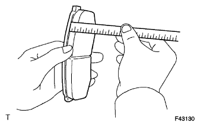
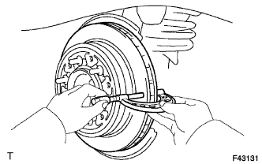
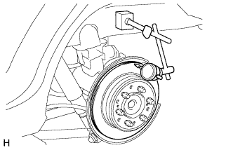

REAR BRAKE > INSPECTION |
| 1. CHECK PAD LINING THICKNESS |
|  |
Using a ruler, measure the pad lining thickness.
| 2. CHECK DISC THICKNESS |
|  |
Using a micrometer, measure the disc thickness.
| 3. CHECK DISC RUNOUT |
|  |
Install the disc in place with the 6 hub nuts.
Using a dial indicator, measure the disc runout 10 mm (0.394 in.) from the outer edge of the disc.
| 4. ADJUST DISC RUNOUT |
Remove the 2 bolts and rear disc brake cylinder mounting from the backing plate.
Remove the hub nuts and disc. Rotate the disc 1/5 of a turn from its original position on the hub and install the disc with the hub nuts.
Measure the disc runout. Make a note of the runout and the disc position on the hub.
Repeat the 2 previous steps until the disc has been installed on the 3 remaining hub positions. If the minimum runout recorded above is less than 0.20 mm (0.00787 in.), install the disc in that position. If the minimum runout recorded above is more than 0.20 mm (0.00787 in.), replace the disc and repeat the "Check Disc Runout" procedure.